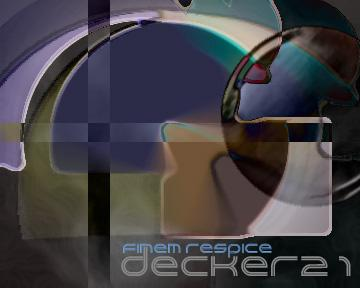

this site says it knows about security...
does it?
well obviously fucking not.
try to work on your permissions before getting online and dealing with the
real world. when you enter the online electron world, please know what the fuck you
are
doing b4 getting a domain name that suggest so.
z7 is bs...
shouts:::::::::::::::::::::::::::::::::::::::::::::::::::::::::::::::::::::::::::::::::
SunDevil , Xenographic, dodz, DioxidE, Azrael, PsychoSurfer, _special, abraxas, Streacer, dNr
Echelon - hey nsa -comeplay ;)
links 4 ur ass......
where i wanna B
the original index was renamed to index.bak